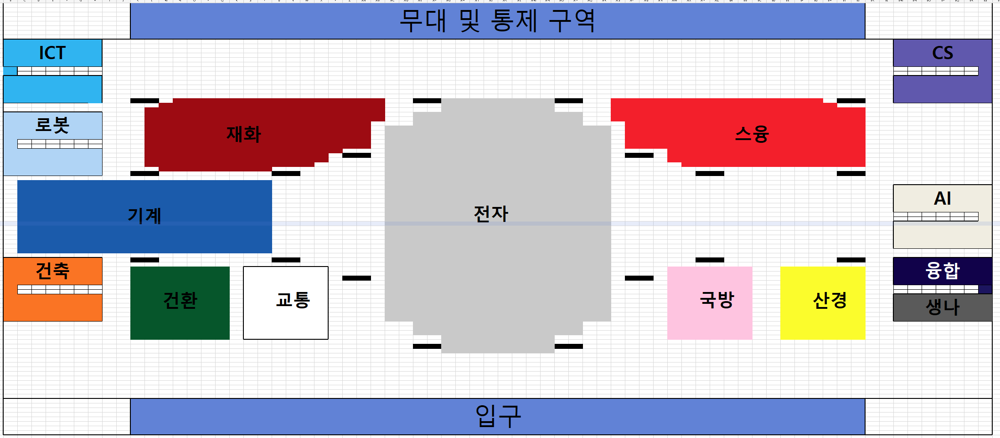

공학대학 × 소프트웨어융합대학
새내기 배움터
1,800명 규모 · 2박 3일

행사 전 준비
운영팀 큐시트에 시간대별 프로그램과 담당자 정리. 라이언스홀 배치도에는 학과별 집결 위치와 통제 구역 표시.
첫날 내 담당은 마이크와 발표 자료 점검. 운영진 공동 준비물은 무전기 40대와 버스 호차별 안내 파일.

현장에서 맡은 일
집결과 버스 탑승 안내
라이언스홀 마이크·PPT·영상 점검. 화면으로 버스 호차 안내 후 현장에서 참가자별 탑승 차량 확인.
학과별 활동에서 전체 행사로
학과별 레크리에이션 종료 후, 다른 운영진과 함께 웰니스홀 입장 안내.
숙소 퇴실 점검
담당 구역인 숙소 4층 퇴실 확인.